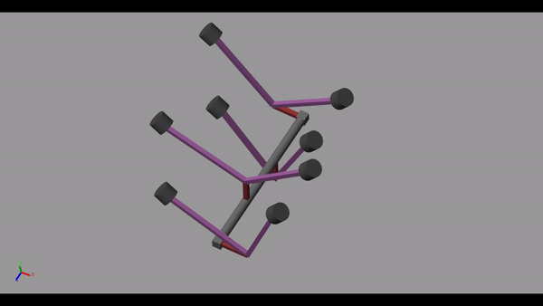

Guide: Dr. Sriram Sundar, IIT Tirupati
[Mar'22 - Apr'22]
In this project, I employed MATLAB Simscape Multibody to conduct an in-depth analysis of unbalanced forces and moments within a V8 cross-plane engine. Utilizing the power of MATLAB Simulink, I created a sophisticated simulation model that accurately represented the dynamic behavior of the engine. This simulation allowed us to thoroughly assess and optimize the unbalanced forces and moments, ultimately enhancing the overall efficiency and performance of the engine.
Key Components and Technologies:
- MATLAB Simscape Multibody: This powerful tool provided the foundation for conducting comprehensive analysis of mechanical systems. It enabled the creation of realistic, multi-body dynamic simulations, making it ideal for modeling complex engine dynamics.
- MATLAB Simulink: Simulink was used to construct the simulation model of the V8 cross-plane engine. Simulink's versatility allowed for precise control and integration of various components to accurately replicate the engine's behavior.
Conclusion:
The utilization of MATLAB Simscape Multibody and MATLAB Simulink in this project demonstrates the power of computational tools in analyzing and optimizing complex mechanical systems. The ability to simulate and evaluate unbalanced forces and moments within a V8 cross-plane engine has significant implications for automotive and mechanical engineering, allowing for the enhancement of engine performance and efficiency.
